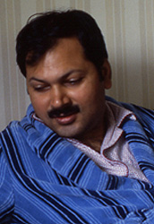

| ALAMGIR HASHMI is a well-known poet, scholar, and critic. He teaches English and Comparative Literature at Quaid-i-Azam University, Islamabad. His credits include a book on Commonwealth literature and several collections of poetry. He began writing poetry as a child, winning the poetry prize in the All-Pakistan Creative Writing Contest in 1972. In 1985 he received the Patras Bokari Award for his second volume of poetry, My Second in Kentucky (1981). |
|

|
PHOTO BY M.U. MEMON, 1985 (Winterthur, Switzerland) |